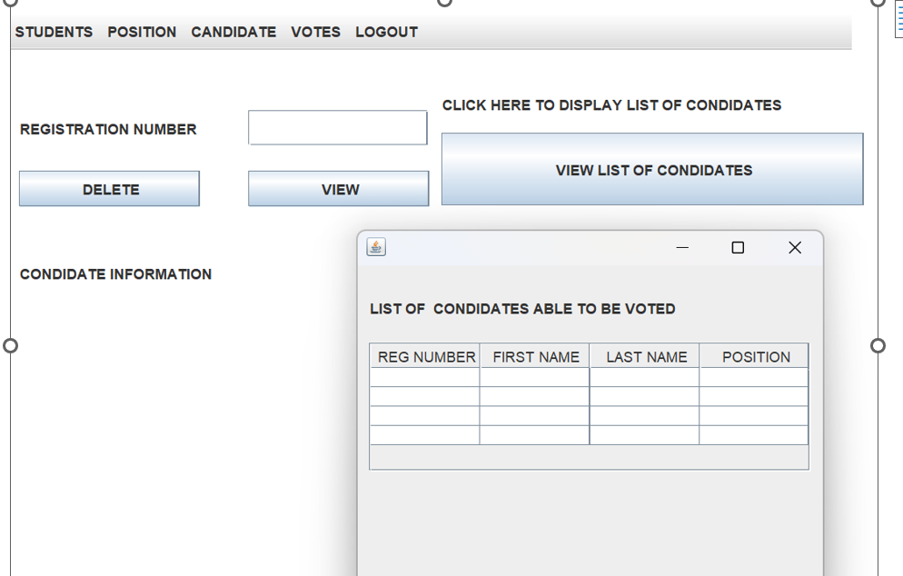
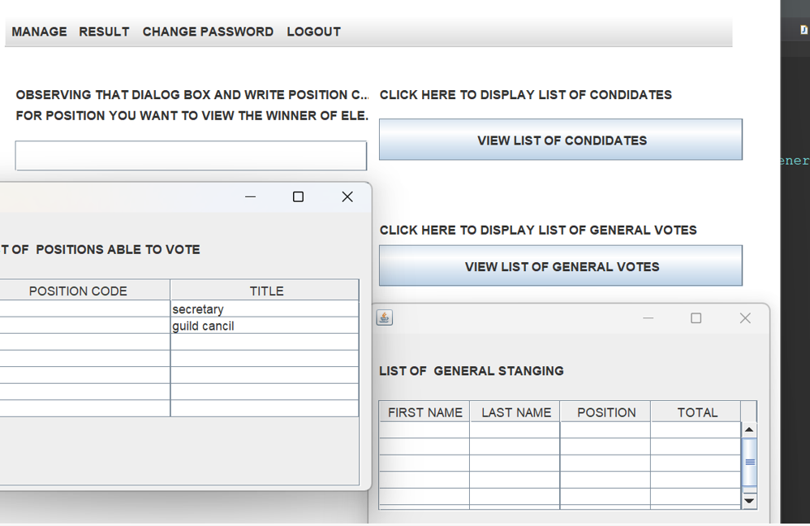
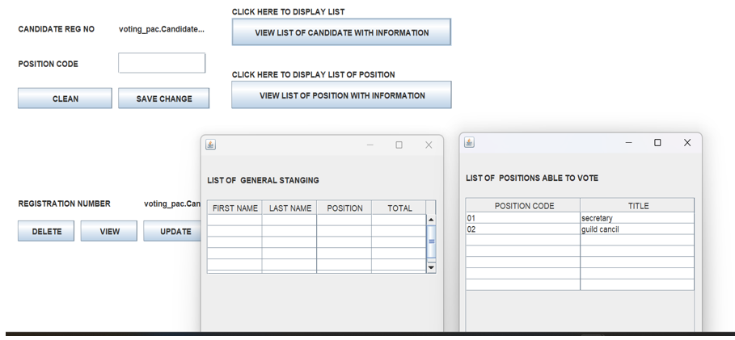

- DATABASE
Database name used: student voting system
- Tables
- admin Table
- student Table
- position table.
- canditate table
- votes table
admin table database structure : This table holds admin credentials it is hard coded regnumber (2210) password (000) .this will not be changed according to application admin log in is one person who has that credentials. Note: the created admin will not have same ability and right in the system.
student Table database structure : student table that holds all students his records is inserted by admin after login the student use credential given to login
position Table database structure :position table holds position information according to application admin is one to add position with position code and position title as shown in diagram above .
candidate Table database structure candidate table is table that holds (keeps) candidates,according to application candidate must be added by admin as student after that student login can register as candidate.
votes table database structure votes table holds information about votes where consists one who vote and who is being voted then after all count score to determine who is the winner.
- JAVA
- Description
- Forms and Images
Introduction
In this chapter I will be describing how powerful generalpurpose programming language was used to create the analyzed system. Under this chapter I will undergo full detail of how everything will function together with database that have been describe above and how it cope with full analyzed system.
Tools used to develop this system in java programming
Eclipse IDE: an integrated development environment used in computer programming. It contains a base workspace and an extensible plug-in system for customizing the environment. It is the second-most-popular IDE for Java development, and was the most popular.
JAR stands for Java Archive: It's a file format based on the popular ZIP file format and is used for aggregating many files into one. Although JAR can be used as a general archiving tool, the primary motivation for its development was so that Java applets and their requisite components.
position Form
student Form
.png)
candidate Form 
vote Form 